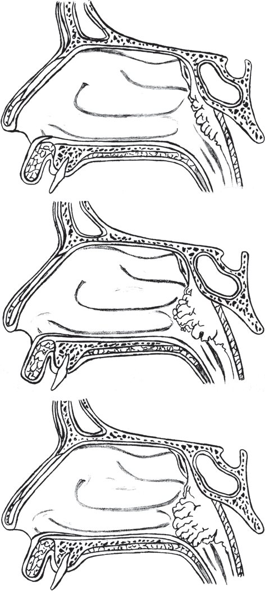
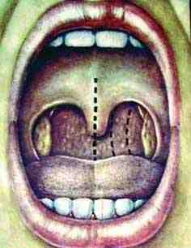
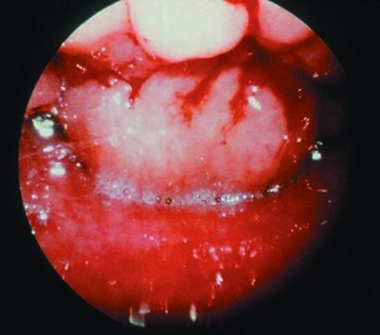

Словарь: Г
- ГА сокращение
- гипертрофия аденоидовГипертрофия аденоидов. Гипертрофия нёбных миндалин, «Список сокращений», с. 4
- Гайморит
- Воспаление преимущественно слизистой оболочки и подслизистого слоя верхнечелюстной пазухи, которое иногда распространяется на надкостницу и (при особо вирулентной инфекции) на костную ткань. Может быть осложнением острого ринита, гриппа, кори, скарлатины или воспалительных заболеваний зубов (одонтогенный гайморит).не из КР: Бабияк В. И., Накатис Я. А., Говорун М. И. «Оториноларингология. Руководство», т. 1 (СПб.: Питер, 2009), с. 253
- Гайморотомия
- Эндоскопическое вскрытие верхнечелюстной пазухи: после надлома средней носовой раковины и резекции крючковидного отростка находят естественное соустье пазухи (при необходимости зондированием) и расширяют его до 5–8 мм. Через расширенное соустье удаляют кисты, полипы и грибковые массы; обнаруженное добавочное соустье соединяют с основным.не из КР: Пальчун В. Т., Лучихин Л. А., Магомедов М. М. «Руководство по практической оториноларингологии» (М.: МИА, 2010), с. 232–233
- Галактоземия (ГАЛ)
- группа наследственных нарушений обмена углеводов, при котором в организме накапливается избыток галактозы и ее метаболитов, что обусловливает клиническую картину заболевания и формирование отсроченных осложнений.Нарушения обмена галактозы (Галактоземия), раздел 1.1
- Галлюцинации
- составление композиции восприятия без соответствующих внешних стимулов, включая зрительные, слуховые, соматосенсорные, обонятельные и вкусовые стимулы.Эпилепсия и эпилептический статус у взрослых и детей, «Термины и определения»
- Гамартома
- Ограниченное опухолевидное разрастание ткани, в большинстве случаев нормально дифференцированной и в норме присутствующей в этой части тела (дизонтогенетический рост нормально сформированной ткани). Лечение хирургическое; наиболее частый пример на шее — гемангиома.не из КР: Probst R., Grevers G., Iro H. «Basic Otorhinolaryngology: A Step-by-Step Learning Guide» (Thieme), с. 336
- Гассеров узел
- Тройничный узел: лежит в тройничном вдавлении на передне-медиальной части верхней поверхности пирамиды височной кости. Служит мишенью деструктивных вмешательств при тригеминальной невралгии (чрескожная радиочастотная или химическая ризотомия узла).не из КР: Watkinson J. C., Clarke R. W. (eds). Scott-Brown’s Otorhinolaryngology, Head and Neck Surgery, 8th ed., vol. 2, с. 1244; Watkinson J. C., Clarke R. W. (eds). Scott-Brown’s Otorhinolaryngology, Head and Neck Surgery, 8th ed., vol. 1, с. 1305
- Гастростомия
- Наложение питательной стомы (зонда в желудок) при головной и шейной онкологии: показана, если приём пищи через рот, вероятно, будет нарушен более 4 недель после операции. При химиолучевом лечении зонд устанавливают до начала лечения (профилактически) или в ходе него (по мере необходимости). Профилактическая гастростомия улучшает нутритивный статус и снижает потерю массы, но может ухудшить глотание и привести к зависимости от зонда; оптимальные сроки и путь не определены.не из КР: Watkinson J. C., Clarke R. W. (eds). Scott-Brown’s Otorhinolaryngology, Head and Neck Surgery, 8th ed., vol. 3, p. 568 PDF
- Гастроэзофагеальная рефлюксная болезнь 3 значения
- 1патологическое состояние, развивающееся в случаях, когда заброс содержимого желудка в пищевод (гастроэзофагеальный рефлюкс) приводит к появлению причиняющих беспокойство симптомов и/или к развитию осложнений.Гастроэзофагеальная рефлюксная болезнь новорожденных, «Термины и определения»В разборах: Острый ларингит, Хронический синусит
- 2хроническое рецидивирующее заболевание, обусловленное спонтанным, регулярно повторяющимся забросом желудочного содержимого в пищевод, что приводит к поражению нижнего отдела пищевода.Рак пищевода и кардии, «Термины и определения»В разборах: Отит средний острый
- 3состояние, развивающееся в случаях, когда заброс содержимого желудка в пищевод вызывает причиняющие беспокойство симптомы и/или приводит к развитию осложнений [1]. У детей старшего возраста (в отличие от детей раннего возраста, когда в основе развития ГЭРБ большее значение морфо-функциональная незрелость и не характерны приведенные морфологические изменения слизистой оболочки пищевода) определение ГЭРБ может быть несколько расширено, где под ГЭРБ понимается хроническое рецидивирующее заболевание, обусловленное нарушением моторно-эвакуаторной функции верхних отделов желудочно-кишечного тракта (ЖКТ) и преимущественно гастроэзофагеальной зоны, характеризующееся регулярно повторяющимся забросом в пищевод желудочного и, в ряде случаев, желудочно-кишечного содержимого, что приводит к появлению клинических пищеводных и внепищеводных симптомов, ухудшающих качество жизни пациентов, к повреждению слизистой оболочки дистального отдела пищевода с развитием в нем дистрофических изменений неороговевающего многослойного плоского эпителия, неэрозивного или эрозивно-язвенного эзофагита (рефлюкс-эзофагита), а у части больных цилиндроклеточной метаплазии, и другим рефлюкс-индуцированным патологическим состояниям [2].Гастроэзофагеальная рефлюксная болезнь у детей, раздел 1.1В разборах: Гастроэзофагеальная рефлюксная болезнь у детей, Гипертрофия аденоидов. Гипертрофия нёбных миндалин
- Гастроэзофагеальный рефлюкс (ГЭР)
- непроизвольный ретроградный заброс желудочного либо желудочно-кишечного содержимого в пищевод.Гастроэзофагеальная рефлюксная болезнь у детей, «Термины и определения», с. 5
- Гастрэктомия
- удаление желудка с прилежащей клетчаткой и лимфатическими узлами.Рак желудка, «Термины и определения»
- ГБ сокращение
- гипертоническая болезньГрипп у взрослых, «Список сокращений», с. 4
- ГБО сокращение
- гипербарическая оксигенацияКраниальные мононейропатии у взрослых, «Список сокращений», с. 4
- ГВ сокращение
- гестационный возрастВрождённая цитомегаловирусная инфекция, «Список сокращений», с. 5
- ГГ сокращение
- генитальный герпесПростой герпес у взрослых, «Список сокращений», с. 4
- ГГТ сокращение
- гамма-глутамилтрансферазаРак носоглотки у детей, «Список сокращений», с. 4
- ГГТП сокращение
- гамма-глютамилтранспептидазаПервичные иммунодефициты с недостаточностью синтеза антител, «Список сокращений», с. 3
- Гемангиома
- Доброкачественное сосудистое новообразование, в основе которого лежит аномальная пролиферация эндотелиальных клеток с нарушенной архитектоникой кровеносных сосудов (определение для инфантильной гемангиомы).не из КР: КР «Гемангиома инфантильная», раздел «1.1 Определение заболевания или состояния»
- Гемато - энцефалический барьер
- гистиогемоцитарный барьер между кровяным руслом и веществом мозга, представленный сосудистой стенкой сосудов микроциркуляторного русла головного мозга.Менингококковая инфекция у взрослых, «Термины и определения», с. 6
- Гематокрит
- Объёмное отношение форменных элементов крови к плазме; даёт представление об общем объёме эритроцитов. Уменьшается при анемиях и потере крови, увеличивается при полицитемии, врождённых пороках сердца, ожогах.не из КР: Бабияк В. И., Накатис Я. А., Говорун М. И. «Оториноларингология. Руководство», т. 1 (СПб.: Питер, 2009), с. 814 (примечание)
- Гематома 2 значения
- 1ограниченное скопление крови при закрытых и/или открытых повреждениях органов и тканей с разрывом сосудов, в результате чего образуется полость, содержащую жидкую или свернувшуюся кровь.Болезнь Виллебранда, «Термины и определения»В разборах: Острый ларингит, Перелом верхней челюсти, Травма уха, Травма гортани, Травма носа, Множественные переломы мозгового и лицевого черепа, Краниальные мононейропатии у взрослых
- 2ограниченное скопление крови при закрытых и открытых повреждениях органов и тканей с разрывом сосудов, в результате чего образуется полость, содержащая жидкую или свернувшуюся кровьГемофилия, «Термины и определения»В разборах: Круп, эпиглоттит, постинтубационный отёк гортани, Инородное тело в пищеварительном тракте
- Гематома перегородки носа
- Скопление крови под надхрящницей перегородки носа: гладкостенная синюшная флюктуирующая припухлость в одной или обеих половинах носа. При пункции получают алую или тёмную гемолизированную кровь, которая вскоре накапливается вновь.не из КР: Бабияк В. И., Накатис Я. А., Говорун М. И. «Оториноларингология. Руководство», т. 1 (СПб.: Питер, 2009), с. 131
- Гематурия
- наличие крови в моче сверх физиологических норм.Болезнь Виллебранда, «Термины и определения»
- Гемисинусит и пансинусит
- В случае вовлечения в воспалительный процесс всех пазух одной половины полости носа заболевание имеет название гемисинусит, а обеих половин – пансинусит.Острый синусит, раздел 1.5, с. 8
- Гемифациальная микросомия
- Сложный черепно-лицевой порок: из-за недоразвития мыщелка (возможно, вследствие потери кровоснабжения в период внутриутробного развития) в разной степени страдают ухо, наружный слуховой проход, сустав и суставная ямка. Может быть двусторонним; лечение — поэтапная реконструкция костей и мягких тканей в черепно-лицевом центре.не из КР: Watkinson J., Clarke R. (eds.). Scott-Brown's Otorhinolaryngology, Head and Neck Surgery, 8th ed., vol. 3 (CRC Press, 2018), ch. 57 «Temporomandibular joint disorders», p. 877
- Гемифациальный спазм (ГФС)
- поражение лицевого нерва, характеризующееся хроническими пароксизмальными безболезненными непроизвольными односторонними тоническими или клоническими сокращениями группы мышц лица, в том числе в покое и ночное время.Краниальные мононейропатии у взрослых, «Термины и определения», с. 7
- Гемолиз
- разрушение эритроцитов.Наследственный сфероцитоз, «Термины и определения»
- Геморрагический ларингит
- Ларингит с субмукозными кровоизлияниями; нередко наблюдается при более тяжёлых формах гриппа.не из КР: Бабияк В. И., Накатис Я. А., Говорун М. И. «Оториноларингология. Руководство», т. 2 (СПб.: Питер, 2009), с. 100
- Гемосинус
- скопление крови в придаточных пазухах носа.Перелом верхней челюсти, «Термины и определения», с. 6
- Гемостаз
- система свертывания кровиГемофилия, «Термины и определения»
- Гемостатическая терапия
- терапия, направленная на остановку кровотечения.Болезнь Виллебранда, «Термины и определения»
- Гемотимпанум
- Скопление крови в барабанной полости; барабанная перепонка при этом тёмно-синего цвета. Для ускорения эвакуации крови через слуховую трубу назначают сосудосуживающие средства в нос.не из КР: Behrbohm H., Kaschke O., Nawka T. «Ear, Nose, and Throat Diseases with Head and Neck Surgery» (Thieme), с. 85 (PDF); Бабияк В. И., Накатис Я. А., Говорун М. И. «Оториноларингология. Руководство», т. 2 (СПб.: Питер, 2009), с. 718
- Гемофилия
- сцепленное с Х-хромосомой врожденное нарушение плазменного гемостаза, возникающее в результате дефицита или отсутствия фактора свертывания крови VIII (FVIII) - гемофилия А или фактора свертывания крови IX (FIX) - гемофилия В.Гемофилия, раздел 1.1
- Генерализованная менингококковая инфекция
- менингококковая инфекция, сопровождающаяся бактериемией, интоксикационным синдромом и преимущественно поражением оболочек головного мозга и/или сосудовМенингококковая инфекция у взрослых, «Термины и определения», с. 5
- Гениопластика
- остеотомия подбородочного отдела нижней челюсти для изменения контуров подбородка, выполняется в эстетических целях.Аномалии и деформации зубочелюстной системы и лицевого черепа, «Термины и определения», с. 5
- Генно-инженернаябиологическая терапия
- терапия с использованием лекарственных средств на основе белковых молекул, созданные с помощью генной инженерии. ГИБТ точечно воздействуют на определенные звенья иммунной системы, отвечающие за патологические процессы, но не тормозят работу всего иммунитета. Ремоделирование слизистой оболочки полости носа и околоносовых пазух – последовательные морфологические изменения, включающие метаплазию мерцательного эпителия гиперплазию бокаловидных клеток, утолщение базальной мембраны, фиброз, неоангиогенез.Полипозный риносинусит, «Термины и определения», с. 5
- Генно-инженерные биологические препараты (ГИБП)
- группа лекарственных средств биологического происхождения, в том моноклональные антитела (химерные, гуманизированные, полностью человеческие) и рекомбинантные белки (обычно включают Fc фрагмента IgG человека), полученные с помощью методов генной инженерии, характеризующиеся селективным действием на определенные механизмы развития хронического воспаления, специфически подавляющие иммуновоспалительный процесс и замедляющие прогрессирование деструкции суставов.Системный склероз, «Термины и определения»
- Генотип
- совокупность генов данного организма.Врожденный множественный артрогрипоз, «Термины и определения»
- Гепатит 2 значения
- 1воспаление в ткани печени, характеризуется наличием некровоспалительных изменений в биоптате печени.Хронический вирусный гепатит С , «Термины и определения»В разборах: Сифилис, Врождённая цитомегаловирусная инфекция, Анафилактический шок, Рак носоглотки, Опухоли слюнных желёз у детей
- 2воспаление печени, критерием которого выступает повышение активности АЛТ в крови и/или наличие некровоспалительных изменений в биоптате печени.Хронический вирусный гепатит B, «Термины и определения»В разборах: Грибковый отит
- Гепатомегалия
- увеличение размеров печениСерповидно-клеточные нарушения, «Термины и определения»
- Гепатопатия
- Токсическое поражение печени при ожоге. В зависимости от тяжести отравления проявляется иктеричностью склер с повышением аспартатаминотрансферазы и лактатдегидрогеназы или острой печёночной недостаточностью.не из КР: КР «Химический ожог пищевода», раздел 1.6, с. 12
- Гепатотоксичность
- повреждение печени, вызванное чужеродными веществами (ксенобиотиками), частным случаем которой является лекарственное поражение печени.Лекарственные поражения печени (ЛПП), «Термины и определения»
- Герпесвирус
- Цитомегаловирус относится к группе герпетических вирусов; в неё входят также вирус простого герпеса, вирус ветряной оспы и опоясывающего лишая и вирус Эпштейна — Барр.не из КР: КР «Врожденная цитомегаловирусная инфекция», раздел «Информация для пациента» (приложение В), с. 59
- Герпетическая ко-инфекция
- одновременное инфицирование несколькими типами вирусов герпеса.Простой герпес у взрослых, «Термины и определения», с. 6
- Герпетическое поражение уха
- Вирусное заболевание, проявляющееся сгруппированными мелкими красными высыпаниями на коже ушной раковины, слухового прохода и барабанной перепонке (опоясывающий лишай ушной раковины).не из КР: Нацруководство «Оториноларингология» под ред. В. Т. Пальчуна, гл. 11 «Болезни уха», раздел «Опоясывающий лишай ушной раковины»
- Гестационный возраст (ГВ)
- возраст ребенка в неделях от зачатия до рождения.Ретинопатия недоношенных, «Термины и определения»
- ГИ сокращение 2 значения
- 1герпесвирусная инфекцияПростой герпес у взрослых, «Список сокращений», с. 4В разборах: Простой герпес у взрослых
- 2гистологическое исследованиеОпухоли слюнных желёз у детей, «Список сокращений», с. 4В разборах: Опухоли слюнных желёз у детей
- ГИБП сокращение
- генно-инженерно биологические препаратыПолипозный риносинусит, «Список сокращений», с. 4
- ГИБТ сокращение
- генно-инженерная биологическая терапияПолипозный риносинусит, «Список сокращений», с. 4
- Гигантоклеточная опухоль
- Редкое доброкачественное новообразование костной ткани с локально агрессивным течением и деструктивным ростом. Синоним — остеокластома.не из КР: КР «Доброкачественные остеогенные и хондрогенные опухоли носа и околоносовых пазух», раздел «1.1 Определение заболевания или состояния», с. 6
- Гигантоклеточный артериит
- Системный васкулит преимущественно крупных сосудов (наряду с артериитом Такаясу). Исключают при впервые возникшей боли в области глазничной ветви тройничного нерва после 50 лет с эпизодами amaurosis fugax: для этого пальпируют поверхностную височную артерию и определяют СОЭ и С-реактивный белок.не из КР: Watkinson J. C., Clarke R. W. (eds). Scott-Brown’s Otorhinolaryngology, Head and Neck Surgery, 8th ed., vol. 1, с. 222; КР «Краниальные мононейропатии у взрослых», с. 57
- Гидростатическая баллонная дилатация
- Расширение стриктуры пищевода протяжённостью до 5 см баллоном под рентгеноскопическим контролем (рентгенассистированная). Применяется как самостоятельная альтернатива бужированию; выполняется в операционной, оборудованной рентгеноскопической аппаратурой, под общей анестезией, с эндоскопом наименьшего диаметра.не из КР: КР «Химический ожог пищевода», раздел 3.3, с. 38
- Гиперакузия
- Неприятные, болезненные ощущения в ушах и резкое снижение разборчивости речи при усилении воспринимаемого звука.не из КР: КР «Потеря слуха, вызванная шумом», раздел 1, с. 16
- Гипералгезия
- повышенная чувствительность к болевым стимулам: интенсивная боль при легком ноцицептивном раздражении зоны иннервации поврежденного участка нервной системы (первичная гипералгезия) либо соседних и даже отдаленных зон (вторичная гипералгезия).Краниальные мононейропатии у взрослых, «Термины и определения», с. 6
- Гипербарическая оксигенация
- Подача пациенту 100% кислорода под давлением более 1 атмосферы. Повышает оксигенацию тканей и усиливает ответ на инфекцию и ишемию; при злокачественном наружном отите применяется как дополнение к антибиотикам и повышает способность полиморфноядерных лейкоцитов бороться с возбудителями.не из КР: Watkinson J., Clarke R. (eds.) «Scott-Brown's Otorhinolaryngology and Head and Neck Surgery», т. 2, с. 788 (PDF); Behrbohm H., Kaschke O., Nawka T. «Ear, Nose, and Throat Diseases with Head and Neck Surgery» (Thieme), с. 169 (PDF)
- Гиперестезия
- повышенная чувствительность к различным стимулам (тактильным, тепловым, холодовым), не адекватная вызвавшему их раздражителю.Краниальные мононейропатии у взрослых, «Термины и определения», с. 6
- Гиперкальциемия
- повышение содержания общего и/или ионизированного кальция в крови.Первичный гиперпаратиреоз , «Термины и определения»
- Гиперкальциурия
- повышение экскреции кальция с мочой.Первичный гиперпаратиреоз , «Термины и определения»
- Гиперосмия
- Повышенное обоняние.не из КР: КР «Краниальные мононейропатии у взрослых», раздел 1.6, с. 42
- Гиперостоз
- патологическое увеличение объема кости (в основном ее толщины) за счет разрастания костной ткани.Дегенеративные заболевания позвоночника, «Термины и определения»
- Гиперпатия
- усиленное или измененное ощущение с эмоционально неприятным оттенком, которое может продолжаться после прекращения нанесения болевого, тактильного или температурного раздражения. При этом порог чувствительности может быть повышен.Краниальные мононейропатии у взрослых, «Термины и определения», с. 6
- Гиперпигментация
- изменение цвета кожного покрова, заключающееся в появлении коричневых пятен разного размера и разной степени интенсивности. Гиперпигментация вследствие ХВН чаще локализуется в нижней трети голени на медиальной поверхности, но может распространяться на другие сегменты голени и на стопу.Варикозное расширение вен нижних конечностей, «Термины и определения»
- Гиперплазия
- Увеличение количества структурных элементов ткани путём их новообразования, репликации (от греч. plasis — образование). Гиперплазия, проявляющаяся увеличением числа специфических для ткани клеток, соответствует понятию истинной гипертрофии.не из КР: Бабияк В. И., Накатис Я. А., Говорун М. И. «Оториноларингология. Руководство», т. 1 (СПб.: Питер, 2009), с. 702
- Гиперпластический полип
- полип, образующийся в результате очаговой гиперплазии и по морфологическому строению не относящийся к доброкачественным опухолям кишечника.Аденоматозный полипозный синдром, «Термины и определения»
- Гиперреактивность бронхов
- состояние дыхательных путей, выражающееся в их повышенной реакции на различные химические, физические или фармакологические раздражители, когда бронхоспазм развивается в ответ на воздействие, не вызывающее такой реакции у большинства здоровых лиц.Психические и поведенческие расстройства, вызванные употреблением табака (никотина). Синдром зависимости от табака, синдром отмены табака у взрослых, «Термины и определения»
- Гиперреактивность слизистой оболочки носа
- Повышенный ответ слизистой оболочки на разные раздражители (запахи, положение тела, температура, гистамин). Общая для аллергического, неаллергического и постинфекционного ринита, поэтому сама по себе не позволяет отличить аллергическую причину от неаллергической.не из КР: Watkinson J. C., Clarke R. W. (eds.) «Scott-Brown's Otorhinolaryngology Head & Neck Surgery», 8th ed. (CRC Press, 2018), т. 1, гл. 92, PDF с. 1059
- Гипертрофия аденоидов (ГА)
- увеличение размера глоточной миндалины, сопровождающееся стойким затруднением носового дыхания и/или другими осложнениями (различными формами обструктивных нарушений сна, экссудативный средний отит, деформация лицевого скелета и др.).Гипертрофия аденоидов. Гипертрофия нёбных миндалин, «Термины и определения», с. 5
- Гипертрофия небных миндалин (ГНМ)
- увеличение размера одной или обеих небных миндалин, которое может протекать бессимптомно или сопровождаться такими симптомами как храп, задержки дыхания во сне, нарушения глотания, нарушения артикуляции, деформация лицевого скелета и др.Гипертрофия аденоидов. Гипертрофия нёбных миндалин, «Термины и определения», с. 5
- Гиперчувствительный пневмонит (ГП)
- воспалительное и/или фиброзирующее заболевание легочной паренхимы и мелких дыхательных путей, возникающее у предрасположенных лиц в результате иммуноопосредованной реакции на ингаляционные антигены [1]. Ранее это заболевание называлось экзогенным аллергическим альвеолитом. Если антиген, вызвавший заболевание, не удается установить, используется термин «криптогенный ГП» или «ГП с неустановленной причиной».Гиперчувствительный пневмонит, раздел 1.1
- Гипестезия 2 значения
- 1снижение чувствительности.Перелом верхней челюсти, «Термины и определения»В разборах: Перелом верхней челюсти
- 2частичное нарушение отдельных или нескольких видов чувствительности (тактильной, температурной, проприоцептивной, вибрационной);Краниальные мононейропатии у взрослых, «Термины и определения», с. 6В разборах: Краниальные мононейропатии у взрослых
- Гипогликемия
- уровень глюкозы в крови ниже нормальных значений.Сахарный диабет 1 типа у взрослых, «Термины и определения»
- Гипоксемия 2 значения
- 1понижение содержания кислорода в крови, которое может привести к тканевой гипоксии. Нарушение тканевого дыхания при гипоксии заключается в переключении аэробного типа на малоэффективный анаэробный с выделением большого количества молочной кислоты.Признаки внутриутробной гипоксии плода, требующие предоставления медицинской помощи матери, раздел 1.1В разборах: Анафилактический шок, Грипп у взрослых
- 2Понижение содержания кислорода в крови, которое может привести к тканевой гипоксии.не из КР: КР «Признаки внутриутробной гипоксии плода, требующие предоставления медицинской помощи матери», раздел «1.1 Определение заболевания или состояния»В разборах: Острые респираторные вирусные инфекции (ОРВИ) у взрослых, РСВ-инфекция у детей
- Гипоксия (кислородная недостаточность) 2 значения
- 1типовой патологический процесс, развивающийся вследствие недостаточности обеспечения и/или потребления кислорода клетками, что приводит к нарушению их функции.Признаки внутриутробной гипоксии плода, требующие предоставления медицинской помощи матери, раздел 1.1В разборах: Коклюш у детей, Анафилактический шок, Грипп у взрослых, Кисты челюстно-лицевой области и шеи
- 2Общее патологическое состояние организма, возникающее при недостаточном снабжении тканей кислородом или нарушении его утилизации.не из КР: Бабияк В. И., Накатис Я. А., Говорун М. И. «Оториноларингология. Руководство», т. 2 (СПб.: Питер, 2009), с. 93В разборах: Нейросенсорная тугоухость у детей, Потеря слуха, вызванная шумом, Острые респираторные вирусные инфекции (ОРВИ) у взрослых, РСВ-инфекция у детей
- Гипоназальность
- Закрытая гнусавость (rhinolalia clausa): нарушение голоса, возникающее при аденоидах, заполняющих свод носоглотки и исключающих резонаторную и фонаторную функции полости носа. Согласные «м» и «н» произносятся как «б» и «д».не из КР: Бабияк В. И., Накатис Я. А., Говорун М. И. «Оториноларингология. Руководство», т. 1 (СПб.: Питер, 2009), с. 582
- Гипопаратиреоз
- состояние, характеризующееся сниженной продукцией паратиреоидного гормона (ПТГ) околощитовидными железами (ОЩЖ) или резистентностью тканей к его действию, что приводит к различным нарушениям, прежде всего фосфорно-кальциевого обмена.Гипопаратиреоз у взрослых , раздел 1.1
- Гипоплазия 2 значения
- 1термин, означающий недоразвитие ткани, органа или целого организма, обусловленное нарушениями в процессе эмбриогенеза.Синдром гипоплазии левых отделов сердца , «Термины и определения»В разборах: Расщелина верхней губы и нёба
- 2врожденное недоразвитие анатомических структур или органов.Идиопатический сколиоз, «Термины и определения»В разборах: Врождённая цитомегаловирусная инфекция, Острый синусит, Первичные иммунодефициты с недостаточностью синтеза антител, Хронический синусит
- Гипосмия
- снижение обонятельной функции.Деформация перегородки носа, «Термины и определения», с. 5
- Гипотермия
- снижение температуры тела менее 36°С. Данный показатель является важным признаком инфекционного процесса, особенно у детей младшего возраста и у пациентов, получающих глюкокортикостероиды [111, 112].Острые миелоидные лейкозы, «Термины и определения»
- Гипотимпанум
- Нижний отдел барабанной полости, подбарабанное углубление (recessus hypotympanicus) ниже уровня барабанной перепонки. При воспалении в нём может скапливаться жидкость, не видимая при осмотре; под костным дном углубления расположена луковица внутренней яремной вены.не из КР: Гайворонский И. В. и соавт. «Функциональная анатомия ЛОР-органов» (СПб.: СпецЛит, 2022), с. 63, 65 PDF
- Гипотиреоз
- дефицит тиреоидных гормонов в организме.Гипотиреоз, раздел 1.1
- Гипофракционирование
- Режим лучевой терапии, при котором доза подводится за небольшое число фракций (при стереотаксическом облучении — чаще от 2 до 7), в отличие от радиохирургии, при которой доза подводится за одну фракцию. При раке голосового отдела гортани T1N0M0 КР допускает 50–55 Гр с разовой дозой 2,75–3,5 Гр, тогда как стандартный режим — 2,0–2,2 Гр за фракцию.не из КР: КР «Вторичное злокачественное новообразование головного мозга и мозговых оболочек», раздел «Термины и определения» (534_3); КР «Рак гортани», разделы 3.1 и 3.2 (475_3)
- Гипофтальм
- более низкое, в сравнении с нормой, положение глазного яблока в глазнице.Перелом верхней челюсти, «Термины и определения»
- Гистологический ответ
- отсутствие прогрессирования или снижение степени некроза, воспаления, фиброза при повторном морфологическом исследовании ткани печени при биопсии по сравнению с исходным уровнем.Хронический вирусный гепатит D (ХВГD) у взрослых, «Термины и определения»
- Гистологическое исследование
- микроскопическое изучение образцов тканей и фрагментов органов, полученных из патологического очага.Доброкачественные опухоли век и конъюнктивы, «Термины и определения»
- Гифема
- кровоизлияние в переднюю камеру;Травма глаза закрытая, «Термины и определения»
- ГКГ сокращение
- глюкокортикоидные гормоныКоклюш у детей, «Список сокращений», с. 4
- ГКС сокращение 3 значения
- 1гиперплазия кровеносных сосудовМальформация кровеносных сосудов головы и шеи, «Список сокращений», с. 4В разборах: Мальформация кровеносных сосудов головы и шеи
- 2глюкокортикостероидыКраниальные мононейропатии у взрослых, «Список сокращений», с. 4; Хронический синусит, «Список сокращений», с. 4В разборах: Краниальные мононейропатии у взрослых, Хронический синусит
- 3глюкокортикоидыРСВ-инфекция у детей, «Список сокращений», с. 4В разборах: РСВ-инфекция у детей
- Глазница
- костная полость, содержащая орган зрения, состоящий из глазного яблока и его вспомогательного аппарата. Она имеет форму усеченной четырехгранной пирамиды с основанием, направленным кпереди и кнаружи.Перелом дна глазницы, раздел 1.1
- ГЛБ сокращение
- гемато-ликворный барьерМенингококковая инфекция у взрослых, «Список сокращений», с. 4
- Гликемия
- концентрация глюкозы в крови.Сахарный диабет 1 типа у взрослых, «Термины и определения»
- Гликированный гемоглобин (HbA 1c )
- показатель, который отражает средний уровень глюкозы в крови за последние 2-3 месяца.Сахарный диабет 1 типа у взрослых, «Термины и определения»
- Глоточная миндалина
- Первое солитарное лимфаденоидное образование на пути вдыхаемого воздуха при носовом дыхании; другие названия — аденоидные вегетации, миндалина Люшка, третья миндалина. Нормальная глоточная миндалина имеет толщину 5–7 мм, ширину 20 мм и длину 25 мм; хорошо развита только в детском возрасте.не из КР: Бабияк В. И., Накатис Я. А., Говорун М. И. «Оториноларингология. Руководство», т. 1 (СПб.: Питер, 2009), с. 579, 423
- Глоточный рефлекс
- Рефлекторная реакция на прикосновение к корню языка и задней стенке глотки. Выраженный глоточный рефлекс затрудняет заднюю риноскопию и осмотр гортани; тогда слизистую оболочку корня языка и глотки обезболивают аппликационным анестетиком или переходят на фиброоптический осмотр.не из КР: Пальчун В. Т., Лучихин Л. А., Магомедов М. М. «Руководство по практической оториноларингологии» (М.: МИА, 2010), с. 23 и 56; Бабияк В. И., Накатис Я. А., Говорун М. И. «Оториноларингология. Руководство», т. 2 (СПб.: Питер, 2009), с. 41
- ГМИ сокращение
- генерализованная менингококковая инфекцияМенингококковая инфекция у детей, «Список сокращений», с. 3
- ГНМ сокращение
- гипертрофия небных миндалинГипертрофия аденоидов. Гипертрофия нёбных миндалин, «Список сокращений», с. 4
- Гнусавость
- Носовой оттенок голоса. Закрытая гнусавость (rhinolalia clausa) возникает при затруднении носового дыхания, открытая (rhinolalia operta) — при параличе мягкого нёба или утрате запирательной функции мягкого нёба, нёбных дужек и среднего сжимателя глотки.не из КР: Бабияк В. И., Накатис Я. А., Говорун М. И. «Оториноларингология. Руководство», т. 1 (СПб.: Питер, 2009), с. 158, 444
- Головная боль напряжения (ГБН)
- одна из наиболее распространенных форм первичной головной боли (ГБ), проявляющаяся двухсторонней ГБ давящего или стягивающего характера, слабой или умеренной интенсивности продолжительностью от 30 минут до нескольких суток. ГБ не усиливается при обычной физической активности и не сопровождается тошнотой, но могут наблюдаться снижение аппетита, фото- или фонофобия [1].Головная боль напряжения (ГБН), раздел 1.1
- Головокружение
- Ощущение вращения: «внутреннее» (собственное вращение, ощущаемое при закрытых глазах) или «внешнее» (вращение окружающих предметов вокруг наблюдателя при открытых глазах). При раздражении вестибулярного аппарата направление головокружения совпадает с направлением вызванного нистагма.не из КР: Бабияк В. И., Накатис Я. А., Говорун М. И. «Оториноларингология. Руководство», т. 2 (СПб.: Питер, 2009), с. 368
- Голосовая щель
- Самая узкая часть гортани, образованная сверху складками преддверия, снизу голосовыми складками. Пространство над ней называется надскладочным, под ней подскладочным. Ширина голосовой щели — наибольшее расстояние между голосовыми складками при вдохе; в норме у взрослого 15–19 мм.не из КР: Бабияк В. И., Накатис Я. А., Говорун М. И. «Оториноларингология. Руководство», т. 2 (СПб.: Питер, 2009), с. 20; Пальчун В. Т., Лучихин Л. А., Магомедов М. М. «Руководство по практической оториноларингологии» (М.: МИА, 2010), с. 52
- Голосовой отросток
- Отросток черпаловидного хряща, к которому прикреплены задний конец голосовой складки и голосовая мышца. При вращении хряща голосовые отростки сближаются или расходятся, чем определяется ширина голосовой щели.не из КР: Бабияк В. И., Накатис Я. А., Говорун М. И. «Оториноларингология. Руководство», т. 2 (СПб.: Питер, 2009), с. 17–18
- Голосовой протез
- специальное клапанное устройство, которое предназначено для восстановления голосовой функции и имплантируется посредством трахеопищеводного шунтирования.Рак гортани, «Термины и определения», с. 5
- Голосовой режим
- Режим молчания или максимального ограничения голосовой нагрузки. При острых воспалениях гортани это важнейшая лечебная мера: его соблюдают до стихания острых воспалительных явлений, а несоблюдение задерживает выздоровление и способствует переходу процесса в хроническую форму.не из КР: Пальчун В. Т., Лучихин Л. А., Магомедов М. М. «Руководство по практической оториноларингологии» (М.: МИА, 2010), с. 308
- Голосовые складки
- Два мышечно-связочных тяжа белесовато-перламутрового цвета с тремя поверхностями: верхней, нижней и поверхностью свободного края. Передними концами они соединяются в комиссуру, задними прикрепляются к голосовым отросткам черпаловидных хрящей. Нередко служат местом возникновения доброкачественных и злокачественных образований и воспалительных процессов.не из КР: Бабияк В. И., Накатис Я. А., Говорун М. И. «Оториноларингология. Руководство», т. 2 (СПб.: Питер, 2009), с. 20
- Голосообразующий аппарат
- вибрирующий электронный аппарат, который прикладывается к подбородку и преобразует колебания мышц дна полости рта в голос. Недостатком этого метода является металлический, лишенный тембровой и эмоциональной окраски голос. 3D- (трехмерная) конформная лучевая терапия – точное составление плана лечения с компьютерной поддержкой на основании современных методов визуализационной диагностики, позволяющее проводить максимально точную (конформную) обработку целевой области с обеспечением максимально щадящего воздействия на здоровые прилегающие ткани и органы, находящиеся в зоне риска.Рак гортаноглотки, «Термины и определения», с. 5
- Гортанные нервы
- Чувствительную иннервацию гортани полностью обеспечивает верхний гортанный нерв. Двигательные волокна возвратного нерва идут ко всем внутренним мышцам гортани, кроме перстнещитовидных, которые иннервирует наружная ветвь верхнего гортанного нерва.не из КР: Бабияк В. И., Накатис Я. А., Говорун М. И. «Оториноларингология. Руководство», т. 2 (СПб.: Питер, 2009), с. 26–27
- Гортаноглотка
- Нижний отдел глотки. Начинается на уровне верхнего края надгортанника, книзу суживается воронкой и лежит позади тел IV–VI шейных позвонков; в просвет её нижней части спереди вдаётся вход в гортань.не из КР: Бабияк В. И., Накатис Я. А., Говорун М. И. «Оториноларингология. Руководство», т. 1 (СПб.: Питер, 2009), с. 420
- ГПЗ сокращение
- гриппоподобное заболеваниеОРВИ у детей, «Список сокращений», с. 4; Грипп у взрослых, «Список сокращений», с. 4
- Гранулёма 2 значения
- 1Очаг продуктивного воспаления в виде плотного узелка: скопление воспалительных клеток (мононуклеарных клеток, Т-хелперов и других).не из КР: КР «Саркоидоз», раздел «Термины и определения»В разборах: Мастоидит, Первичные иммунодефициты с недостаточностью синтеза антител
- 2очаг продуктивного воспаления, имеющий вид плотного узелка, скопление клеток воспаления: мононуклеарных клеток (монобласты, промоноциты, моноциты, макрофаги-резиденты), часть из которых с незавершённым фагоцитозом, Т-хелперов, цитотоксических Т-супрессоров, при реакции гиперчувствительности замедленного типа.Саркоидоз, «Термины и определения», с. 5В разборах: Саркоидоз
- Гранулёма саркоидная
- (g. sarcoideum) возникающая в лимфоузлах и внутренних органах при саркоидозе; состоит преимущественно из эпителиоидных клеток с примесью лимфоидных, гигантских многоядерных клеток Пирогова — Лангханса и «инородных тел». Различают некротические и ненекротические гранулёмы. Саркоидная гранулёма, как правило, имеет штампованный вид.Саркоидоз, «Термины и определения», с. 5
- Гранулематоз с полиангиитом
- Системное заболевание (прежнее название — гранулематоз Вегенера), для которого характерна триада: васкулит, некроз и гранулематозное воспаление, обычно верхних и нижних дыхательных путей и почек.не из КР: Watkinson J. C., Clarke R. W. (ред.) Scott-Brown’s Otorhinolaryngology, Head and Neck Surgery, 8th ed., т. 2, с. 280 (PDF)
- Грануляции
- Грануляционная ткань: хорошо васкуляризированная ткань, содержащая коллаген и протеогликаны. При заживлении она постепенно формируется и замещает сгусток на месте повреждения.не из КР: Watkinson J., Clarke R. (eds.) «Scott-Brown's Otorhinolaryngology and Head and Neck Surgery», т. 1, с. 145, 150 (PDF)
- Грибковый наружный отит
- грибковое заболевание, обусловленное развитием на коже ушной раковины, стенках наружного слухового прохода, барабанной перепонке плесневых или дрожжеподобных грибов.Грибковый отит, раздел 1.1
- Грушевидное отверстие
- Отверстие, верхнюю границу которого образует нижний край носовых костей; к его краям прикрепляется основание пирамиды носа.не из КР: Бабияк В. И., Накатис Я. А., Говорун М. И. «Оториноларингология. Руководство», т. 1 (СПб.: Питер, 2009), с. 44
- Грушевидный синус
- Грушевидный карман: углубление гортаноглотки по бокам от гортани, кнаружи от черпалонадгортанных складок. Хорошо виден при фонации, в норме свободен от содержимого, слизистая оболочка гладкая розовая.не из КР: Пальчун В. Т., Лучихин Л. А., Магомедов М. М. «Руководство по практической оториноларингологии» (М.: МИА, 2010), с. 48, 52
- Грыжа пищеводного отверстия диафрагмы 2 значения
- 1смещение содержимого брюшной полости через пищеводное отверстие диафрагмы вследствие его расширения.Врожденная диафрагмальная грыжа, «Термины и определения»В разборах: Гастроэзофагеальная рефлюксная болезнь у детей
- 2заболевание, связанное со смещением через пищеводное отверстие диафрагмы в грудную полость абдоминального отдела пищевода, кардии, верхнего отдела желудка, а иногда и петель кишечника. Грыжи пищеводного отверстия диафрагмы относятся к истинным грыжам и делятся на две большие группы – эзофагеальные и параэзофагеальные. Наиболее часто (примерно в 80-90% случаев) встречаются эзофагеальные грыжи. При эзофагеальных грыжах пищеводно-желудочный переход вместе с желудком смещается через пищеводное отверстие выше уровня диафрагмы. Пищевод обычно имеет нормальную длину, но из-за смещения кверху он может быть деформирован и изогнут. Для параэзофагеальных грыж характерно смещение части желудка и/или других брюшных органов (сальник и кишечник) вверх рядом с пищеводом. Пищеводно-желудочный переход в этом случае располагается на обычном месте. Грыжи пищеводного отверстия не всегда являются фиксированными. Степень смещения кверху и форма желудка могут меняться в зависимости от положения больного, степени заполнения и состава содержимого желудка (плотная пища или жидкая, газ). Перемещение желудка при грыжах пищеводного отверстия может быть частичным или полным.Врожденная диафрагмальная грыжа, раздел 1.1В разборах: Химический ожог пищевода
- ГС сокращение
- герпетический стоматитПростой герпес у взрослых, «Список сокращений», с. 4
- ГФМИ сокращение
- генерализованная форма менингококковая инфекцииМенингококковая инфекция у взрослых, «Список сокращений», с. 4
- ГФС сокращение
- гемифациальный спазмКраниальные мононейропатии у взрослых, «Список сокращений», с. 4
- ГЭР сокращение
- гастроэзофагеальный рефлюксГастроэзофагеальная рефлюксная болезнь у детей, «Список сокращений», с. 4
- ГЭРБ сокращение
- гастроэзофагеальная рефлюксная болезньГастроэзофагеальная рефлюксная болезнь у детей, «Список сокращений», с. 4; Хронический синусит, «Список сокращений», с. 4


